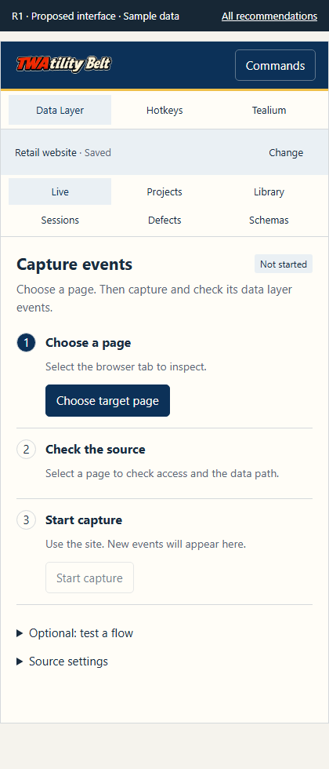
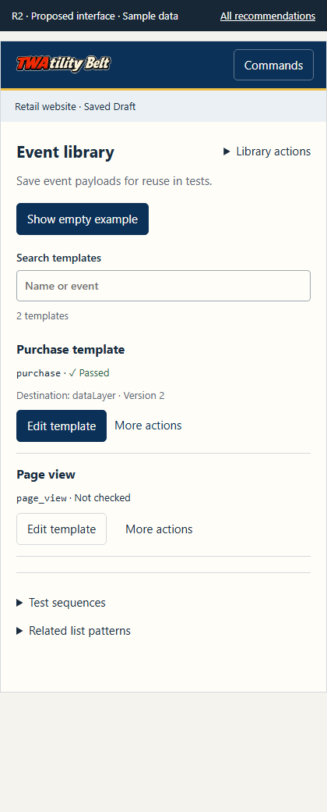
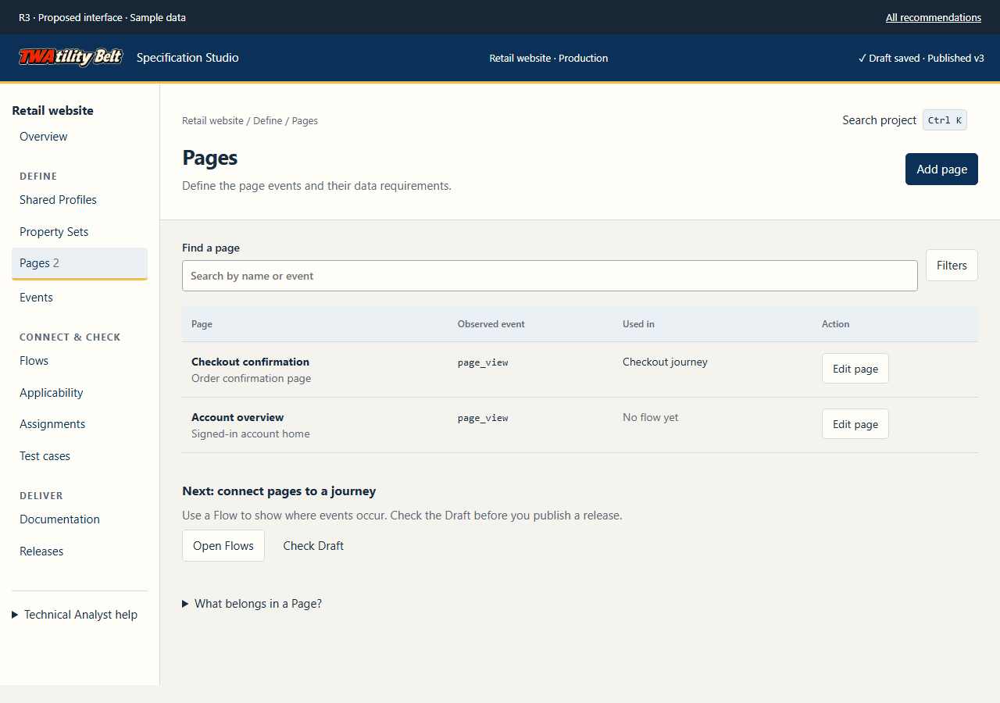
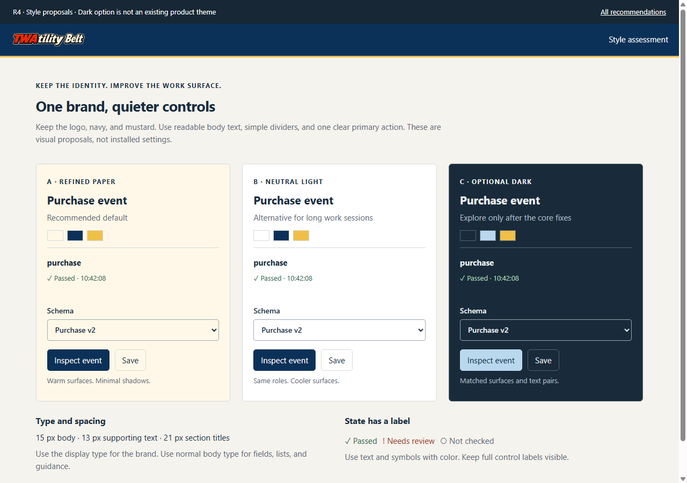
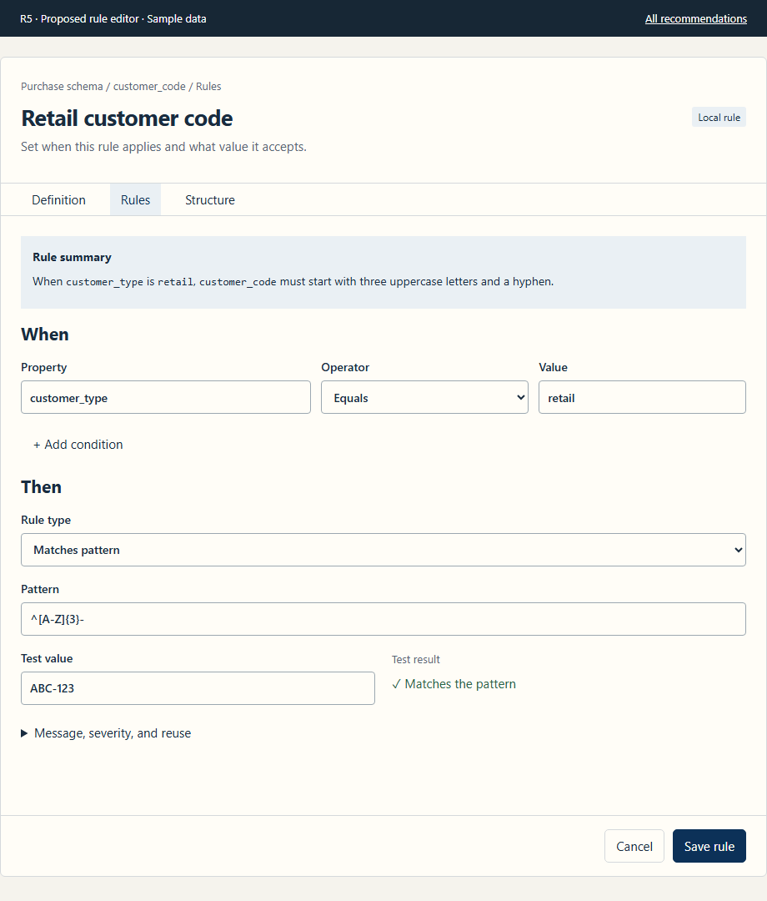
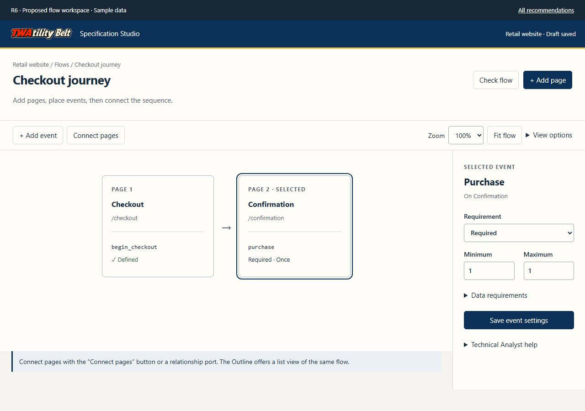
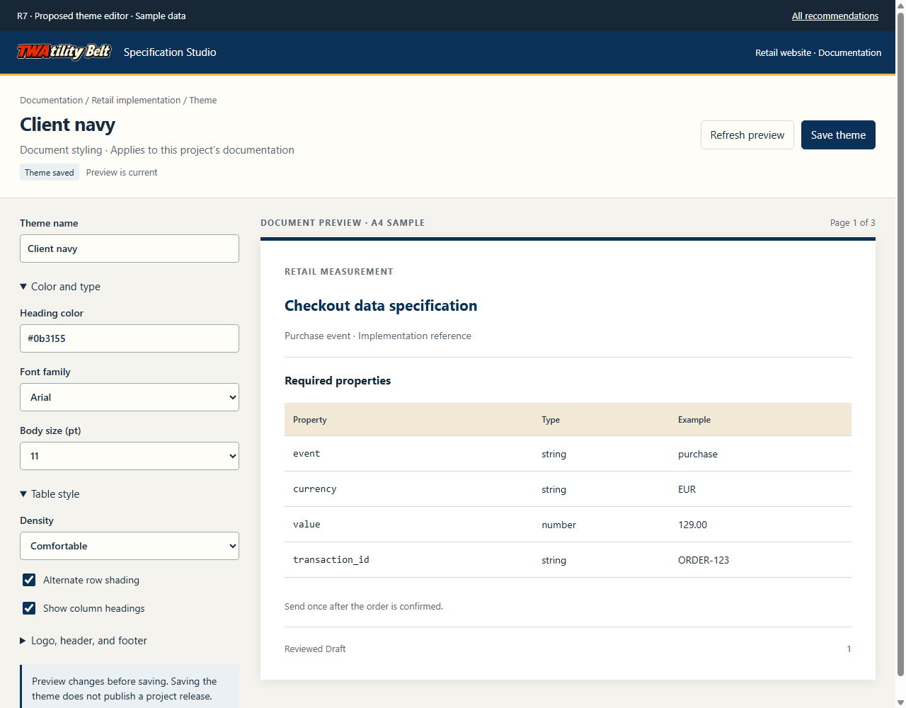
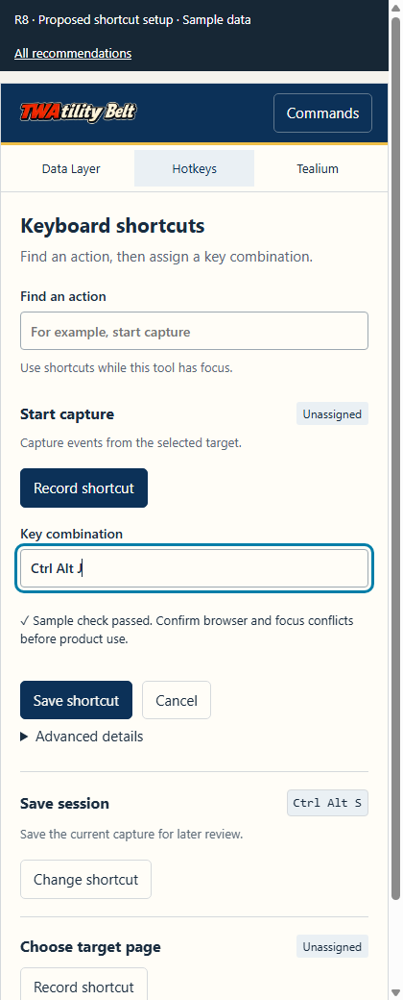
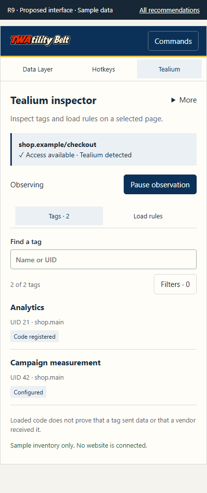

Show the path to capture
Use visible utility names and a short target → source → capture sequence. Move optional flow guidance below setup. Keep status beside its action.

 Visual and UX review · 26 September 2026
Visual and UX review · 26 September 2026The paper-and-navy identity works. Repeated control borders, long setup areas, and weak action priority make common work harder to scan. Start with the narrow rule editor, capture setup, list actions, and Tealium.
These mockups use sample data. They do not change the extension. Open each view to test its local controls. Use the “Current interface” link to compare the fresh browser capture.
Read the assessment and test limitsUse visible utility names and a short target → source → capture sequence. Move optional flow guidance below setup. Keep status beside its action.

Explain the empty state. Keep Edit or Open beside each record. Move transfer and destructive actions into named menus. Apply the same pattern to Sessions and Defects.

Basis: Carbon: empty states and list actions
Group navigation by Define, Connect & check, and Deliver. Give the current task the primary action. Keep help available on demand.

Basis: NN/g: progressive disclosure
Keep navy, paper, mustard, and the logo. Reduce heavy borders and shadows around routine content. Compare refined paper, neutral light, and an optional dark proposal.

Basis: Carbon: color roles and W3C: contrast
Replace the narrow side rail with top tabs. Stack condition fields on small screens. Keep the summary, test result, and Save rule action easy to find.

Basis: W3C: reflow
Keep Add page, Add event, Connect, and Fit visible. Put secondary view controls in one menu. Use the inspector for the selected item.

Separate document themes from application appearance. Show the preview beside its controls. State when edits are unsaved or the preview is out of date.

Show readable action names. Make shortcut recording explicit. Put internal IDs under Advanced details. Start command search with useful tasks.

Use the same control sizes and spacing. Show one next step for target selection, access, and observation. Show tag filters after observation starts.

Assessment prototypes. Sample figures are illustrative. Saved-state changes remain in the open page only. The full review separates specification checks, browser results, and untested production behavior.